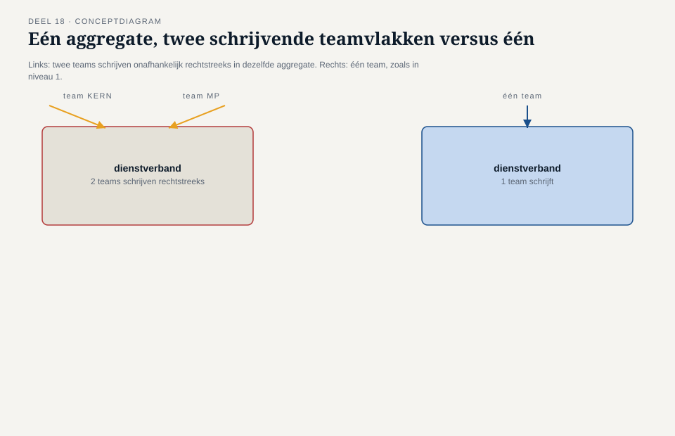
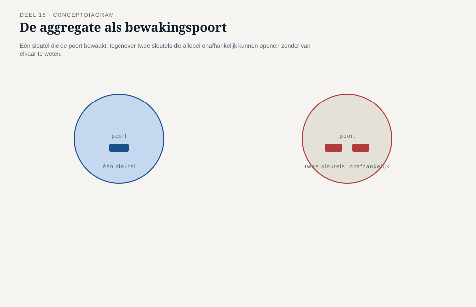
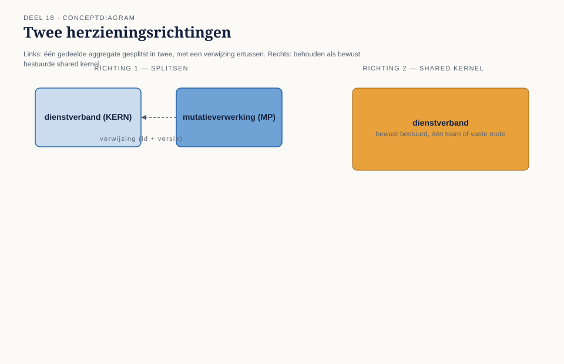
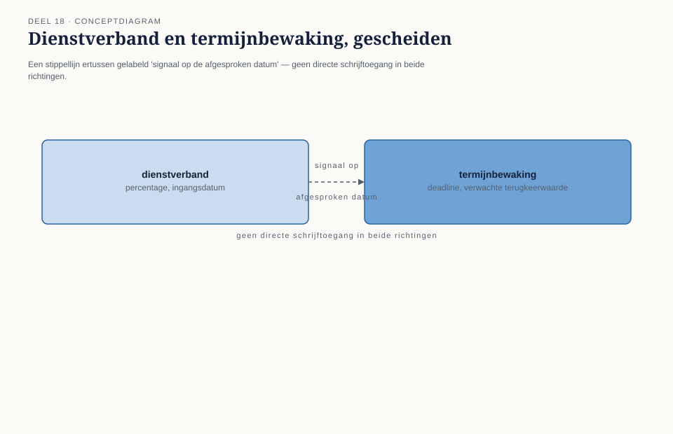

Deel 18 — Aggregates herzien: consistentiegrenzen bij meerdere teams
Slidedeck · Ductus-cursus Domain-Driven Design · niveau 2 · deel 18 van 30 · 30 slides
Slide 1 — Titel
Domain-Driven Design — deel 18 Aggregates herzien: consistentiegrenzen bij meerdere teams Niveau 2: professional · Programma Mutatieplatform
Slide 2 — Waar we vandaan komen
Deel 6 (niveau 1): het aggregate als consistentiegrens. Eén team. Eén vanzelfsprekende bewaker.
Slide 3 — Twee signalen die wachtten
De botsing over “dienstverband” (casusdossier §3). Vera’s observatie aan het eind van deel 17.
Slide 4 — Vera
“Ik heb toen gezegd: een shared kernel is een doorlopende, kostbare afspraak. Wat ik er niet bij zei: op dit moment is het geen afspraak. Het is één aggregate.”
Slide 5 — Karsten
“Twee teams die allebei, onafhankelijk van elkaar, de invariant van hetzelfde aggregate bepalen. En een aggregate kan er maar één hebben.”
Slide 6 — Otto’s snelle antwoord
“Spreken we gewoon af wie eerst schrijft?”
Slide 7 — Foppe’s tegenvraag
“En bij een derde team dat hetzelfde nodig heeft — sluit dat dan ook aan in de rij?”
Slide 8 — De kernstelling van dit deel
Een aggregate die door twee teams tegelijk wordt aangeraakt, is geen toevalstreffer. Het is een ontwerpfout.
Slide 9 — Wat dit deel oplevert
- Waarom dit een ontwerpfout is, geen coördinatieprobleem
- Twee herzieningsrichtingen
- De termijnbewaking opgelost
- ↗ Uitvoering: het Locked Platform
- De grenzentoets
Slide 10 —

Eén aggregate, twee pijlen vanuit twee teams — tegenover één aggregate, één pijl vanuit één team
Slide 11 — De vuistregel
Een aggregate hoort bij precies één team.
Slide 12 — Waarom
Een invariant vraagt één bewaker. Twee onafhankelijke schrijvers = geen garantie meer, ongeacht hoe de grens is getekend.
Slide 13 —

Een poort met één sleutel — tegenover een poort met twee sleutels die elkaar niet zien
Slide 14 — Karsten, de consequentie
“Als twee teams allebei moeten kunnen schrijven, is dat geen reden om beter af te stemmen. Het is een teken dat we een grens verkeerd hebben gelegd.”
Slide 15 — Twee richtingen
1. Splitsen langs teamgrenzen 2. De contextgrens zelf heroverwegen
Slide 16 — Richting 1: splitsen
Twee invarianten die toevallig dezelfde naam dragen. KERN: authentieke registratie. Mutatieplatform: validatie op een momentopname.
Slide 17 — Richting 2: bewust bestuurde shared kernel
Structureel, langdurig, wezenlijk gedeeld. Eén team, of een vaste afstemmingsroute — met de kosten die daarbij horen.
Slide 18 — Vera, het onderscheid
“Een shared kernel is geen verbod op delen. Het is een verbod op ongeorganiseerd delen.”
Slide 19 —

Links: gesplitst, met een verwijzing ertussen. Rechts: behouden als bestuurde shared kernel.
Slide 20 — Terug naar de termijnbewaking
Het percentage nu — één invariant. Op tijd teruggekeerd — een andere invariant, over tijd.
Slide 21 — Otto, voor het eerst instemmend
“Twee dingen die allebei hun eigen klein baasje hebben, en die elkaar op het juiste moment een seintje geven.”
Slide 22 —

De dienstverband-aggregate en de termijnbewaking, verbonden door een signaal — geen gedeelde schrijftoegang
Slide 23 — ↗ UITVOERING: HET LOCKED PLATFORM
Eén modelleerkeuze. Meer dan één manier om te bouwen.
Slide 24 — Twee routes, kort
ORM: één transactie, één rijenset. Event-sourced: één event-reeks per aggregate-instantie.
Slide 25 — Het Locked Platform
Eén noemenswaardig voorbeeld van de event-sourced route. Toestandsmachines, CQRS. Geen platformdiepgang hier. ↗ Toolbijlage.
Slide 26 — De werkvorm van dit deel
De grenzentoets
Vier stappen. Eén vraag die het verschil maakt.
Slide 27 — De vier stappen
- Aggregate en invariant
- Wie schrijft er daadwerkelijk in?
- Richting 1 of richting 2?
- Hoe bereiken gescheiden aggregates elkaar?
Slide 28 — Het veld dat het verschil maakt
Welk incident gaat er opnieuw gebeuren
als we deze grens laten zoals hij nu is —
en hoe lang duurt het voordat iemand het merkt?
Slide 29 — Daan, aan Iris
“We hebben de botsing niet opgelost door beter af te spreken wie eerst mag schrijven. We hebben ontdekt dat er nooit één grens had mogen bestaan die twee teams bewaakten.”
Slide 30 — Volgende keer
Deel 19 (twee dagdelen) — Applicatie-architectuurpatronen: hexagonaal, gelaagd, CQRS als patroon. Hoe gescheiden aggregates binnen één architectuur samenwerken.